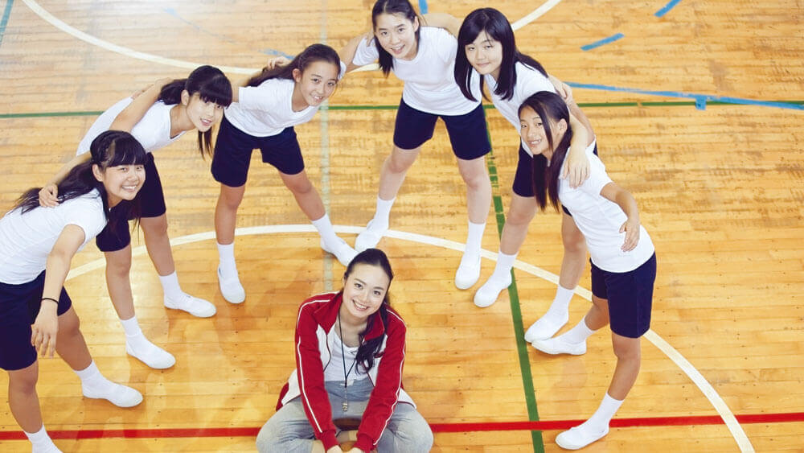
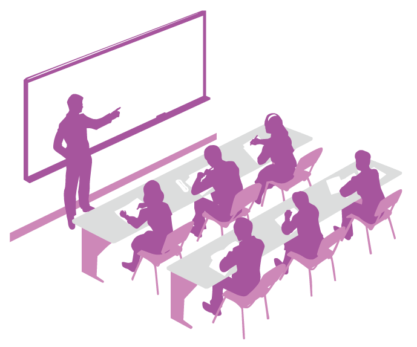

- 演技レッスンの目的は、
ひとつじゃない。 - 
Primary Course
スタート
アップクラス
受講生募集
こんな経験ありませんか？
就活やバイトの
面接が苦手
何をやっても
集中力がなくて
続かない
友人との距離感がわからない…
サークルやゼミ
など、チームで
動くことが苦手
接客業なのに
人とのコミュニケー
ションが苦手
うん！
あるある！
キャラクター紹介
-
日向伶奈（ひなたれな）
大学2年生
最近 社会に出てからのことを考え始めた -
嶋本（しまもと）
大学2年生 伶奈の友人
日本ナレーション演技研究所(日ナレ)で
演技のレッスンを受講中
-
そういえば 嶋本君は声優をめざして
日ナレに通ってるよね -
うん でもプロをめざさなくてもいい
スタートアップクラスもあるよ -
どうして声優をめざさないのに
演技を勉強する必要があるの？ -
それは 演技レッスンの目的は
ひとつじゃないからなんだ
演技のレッスンを通して「コミュニケーション能力」をはじめ、「主体性」や「積極性」「協調性」「リーダーシップ」など、学校や職場で求められる多くのスキルを身につける
学校や職場、そして地域活動など現代の社会においては、さまざまなスキルが必要とされています。演技のレッスンでは、「お腹から大きな声を出す」「聞き取りやすいかつ舌で相手に伝える」「しっかり挨拶をする」「大勢の前で自分の意見を言う」「他者の考えを汲みとる」等々、社会でも活かせるさまざまな訓練が行われています。
これまで弊所でも、長年にわたり育成・指導をしていくなかで、このような演技レッスンを通し、受講者が社会で必要とされているさまざまなスキルを身につけ、声優・俳優としてだけでなく、多くのシーンで活躍する様子を目にしてまいりました。弊所ではこれらの経験を踏まえ、より多くの方々に「演技レッスン」の場を提供させていただくことで、演技の楽しさはもちろんのこと、数多くのスキルのなかから、自分に足りていないものを補う一助にしていただけると考えております。
社会で必要とされているさまざまな能力の一例
- 礼儀
- 社会性
- 行動力
- 率先力
- 瞬発力
- 洞察力
- 判断力
- 決定力
- 想像力
- 創造力
- 集中力
- 記憶力
- 継続力
- 忍耐力
- 完遂力
- 読解力
- 探究心
- 柔軟性
- 論理性
- 適応力
- 主体性
- 自立性
- 積極性
- チャレンジ精神
- 協調性
- 協力姿勢
- フォロー力
- 利他心
- 計画性
- 改善意識
- 時間・行動管理
- 創意工夫
- アイデア提案力
- 周辺観察力
- 情報収集力
- 自己分析力
- 自己PR作成・発表力
- 表現力
- プレゼン力
- オーディション・面接対応力
- 度胸
- 自信
- 冷静さ
- 丁寧さ
- コミュニケーション能力
- リーダーシップ
- 配慮
- 貢献
- 尊重
- 目標設定姿勢
- 自己反省姿勢
- ...etc
-
ほえ～ 社会人って大変なんだね
私には無理かも～ -
あはは そう思っちゃうよね
僕も最初はそうだったからなー -
そうなんだ 少し安心した
それなら私も演技の勉強をすれば
ちょっとは変われるのかな？ -
お芝居は仲間とのコミュニケーションが
必要になるから 主体性や協調性などは
自然と身に付くんじゃないかな
もちろん表現力もね！
演技のレッスンで養うスキルは、さまざまなシーンで活かせます
-
進学や就活、アルバイトなどの面接に
-
会議・集会などの会合に
-
接客や営業、プレゼンなどのビジネスシーンに
-
スピーチや司会進行が必要なイベントに
-
 学校や学習塾、各種スクールでの指導・コミュニケーションに
-
幼稚園や保育園、ご家庭などでの読み聞かせに
-
演劇部・演劇サークルなどの補講に
-
学校やクラブ活動、地域の交友関係に
-
演技ってすごいね！
-
僕も最初は社会生活とはあまり関係ない
と思っていたんだけど 大学やバイト先
でも結構評判良くて(笑) -
私も始めてみたいけど
演技って難しそうだし -
最初は少し恥ずかしいかもね
でも すぐに楽しくなると思うよ
演技のレッスンって何をするの？
- 発声
- お腹から大きな声を出すレッスン
- かつ舌
- 聞き取りやすく発音するレッスン
- 朗読
- 書かれている事の意図を汲み取って情感豊かに表現するレッスン
- エチュード（即興芝居）
- 基本的な設定だけを決めて、状況に応じ相手とのかけ合いをするレッスン
他にもシアターゲームなどで楽しみながら「集中力」や「想像力」など、さまざまなスキルを養うレッスンをおこないます。
-
本当だ！これなら楽しく通えるかも
ゲームみたいなのもあるんだね -
お腹から大きな声を出すだけでも楽しいよ
-
なんか 私にもできそうな気がしてきた
-
それなら通う場所や時間 費用などが
自分に合っているかどうか
しっかり調べた方がいいね
スタートアップクラス概要
| 開設校 |
|
|---|---|
| 受講対象年齢 | 中学卒業以上、４０歳まで |
| レッスン回数・時間 | 週１回 ・３時間 |
| 入所時期 |
|
| 入所金 | ２万円 |
| 4月生・年間受講料 | １２万円 |
| 7月生・年間受講料 | ９万円 |
- ※上記金額には消費税が含まれています。
- ※年間受講料のみ分割納入可能です。
- ※2年目以降は年間受講料12万円のみのお支払いとなります。
注意点
- ●各校定員になり次第締め切らせていただきます。また、定員に満たない場合は開設されない可能性があります。
- ●年度終了後、より高いレベルの演技をすることに興味を持たれ、声優・俳優をめざしたいと思われた方は、コース変更が可能です。
- ●7月生での入所は、4月生に3ヶ月遅れて合流していただく形となります。（一部クラスが新設される場合があります）
-
これなら通えそう！
-
まずは入所審査を受けないとね
入所には 簡単な実技審査や面接があるんだ -
面接！？ 審査！？
私 大丈夫かなぁ -
ほとんどの人が 初心者だから大丈夫だよ
心配なら 無料体験レッスンを受けてみたら？
入所審査について
入所を希望される方は、入所審査を受けていただく必要があります。
2019年度7月生での入所を希望される方は、5・6月の入所審査にお申し込みください。
審査日程は資料請求（無料）のうえ、同封されている「入所面接日程」をご参照ください。
※2020年度4月生での入所を希望される方の入所審査は、2020年1月より実施予定です。
※定員になり次第、受付を終了させていただきますのでご了承ください。
お申し込み方法
資料請求（無料）のうえ、同封されている「入所申込書」にてお申し込みください。詳細は入所審査日の5日前までにお送りいたします。なお、他の演技コースをご希望の方と一緒に入所審査を受けていただく場合があります。
※入所審査料／無料
※審査内容／筆記・実技（セリフ）・面接
無料体験レッスンについて
レッスンの一部（ストレッチ、基礎的な演技レッスンなど）を実際に体験していただけます。
レッスンには参加せずに、ご見学いただくことも可能です。
無料体験レッスンの日程は資料請求（無料）のうえ、同封されている「無料体験レッスン日程」をご参照ください。
お申し込み方法
資料請求（無料）のうえ、同封されている「無料体験レッスン申込書」にてお申し込みください。詳細は、実施日の7日前までにお送りいたします。なお、他の演技コースをご希望の方と一緒に体験レッスンを受けていただきます。
※受付対象年齢／中学3年生以上、40歳まで
※参加条件／心身ともに健康な方
-
緊張しがちなところがあるから
就活が心配だったけど
少し希望がみえてきたかも -
がんばってね！
僕も声優をめざして頑張るよ -
この勢いで
私も声優をめざしちゃおうかな～っ -
ライバル登場か… えっ 本気!?
日本ナレーション演技研究所とは
学校に通いながら、働きながらでも時間的・経済的に負担の少ないレッスンで声優をめざせる声優養成所です。
主な出身者・活躍状況
- 植田 佳奈
- 「Fate/stay night」遠坂凛 役
- 内田 真礼
- 「アオハライド」吉岡双葉 役
- 梶 裕貴
- 「進撃の巨人」エレン・イェーガー 役
- 斎藤 千和
- 「魔法少女まどか☆マギカ」暁美ほむら 役
- 佐倉 綾音
- 「僕のヒーローアカデミア」麗日お茶子 役
- 椎名 へきる
- 「地獄少女 宵伽」山童 役
- 下野 紘
- 「うたの☆プリンスさまっ♪」来栖翔 役
- 鈴木 達央
- 「ファイナルファンタジーXV」
ノクティス・ルシス・チェラム 役 - 林原 めぐみ
- 「ヱヴァンゲリヲン」綾波レイ 役
- 日笠 陽子
- 「けいおん!」秋山澪 役
- 藤田 咲
- 「VOCALOID2」初音ミク 役
- 堀江 由衣
- 「魔法つかいプリキュア!」
十六夜リコ/キュアマジカル 役 - 松岡 禎丞
- 「ソードアート・オンライン」キリト 役
- 村瀬 歩
- 「ハイキュー!!」日向翔陽 役
- 山下 大輝
- 「弱虫ペダル」小野田坂道 役